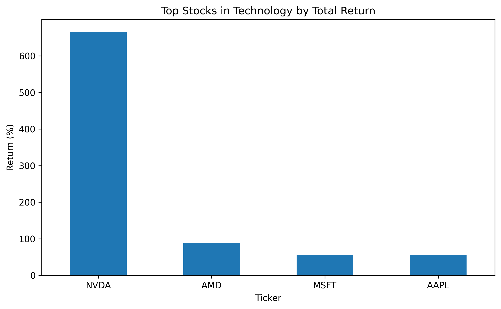
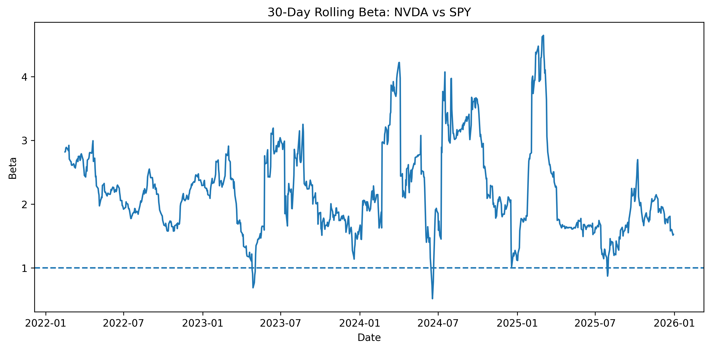

This project analyzes the performance of selected S&P 500 stocks and sector ETFs from 2022 to 2025. The goal is to compare relative growth, identify sector differences, and understand how AI-related companies and sectors have influenced the broader market.
The dataset used in this project was collected using the yfinance Python library, which retrieves historical financial data from Yahoo Finance. It includes daily data for selected S&P 500 stocks and sector ETFs from 2022 to 2025, covering attributes such as open, high, low, close, adjusted close, and trading volume. Additional features were engineered, including daily returns, rolling volatility, moving averages, momentum indicators, and rolling beta relative to SPY. The dataset contains several thousand observations and more than ten features, including both continuous variables and categorical attributes.
This project includes multiple forms of interactivity. Plotly charts allow zooming, hovering, and toggling data. The Altair heatmap provides tooltips for detailed values, while the D3 visualization enables dynamic exploration of sector trends over time. These features allow users to interact with the data and gain deeper insights.
Takeaway: The heatmap reveals that the Technology and Consumer sectors experienced more consistent positive returns after 2023 compared to other sectors. In contrast, sectors like Energy and Materials show more volatility and mixed performance. This indicates that AI-related industries have been a major contributor to recent market strength.

Takeaway: This chart demonstrates that a small number of companies, led by NVDA, dominate total returns within the Technology sector. The large gap between NVDA and other stocks highlights how market performance is increasingly concentrated in a few high-growth firms. This reinforces the idea that sector performance is driven by top performers rather than evenly distributed growth.
Takeaway: The candlestick chart shows that while NVDA has experienced strong upward growth, it also exhibits significant short-term volatility. Large price swings indicate higher risk, even during periods of overall growth. This highlights the tradeoff between high returns and increased volatility in AI-driven stocks.

Takeaway: The rolling beta chart shows that NVDA’s sensitivity to market movements has increased over time, often remaining above 1. This suggests that NVDA is more volatile than the broader market and plays a growing role in influencing overall market behavior. Periods of extreme beta spikes reflect heightened market uncertainty and rapid price movements.
The analysis reveals that market performance is increasingly driven by a small number of sectors and companies, particularly in technology and AI-related industries. These firms significantly outperform broader benchmarks.
High-growth stocks also exhibit higher volatility and sensitivity to market movements, emphasizing the importance of diversification in investment strategies.
Future work could include incorporating macroeconomic data or expanding to a full S&P 500 dataset, as well as developing a fully interactive dashboard for user-driven analysis.